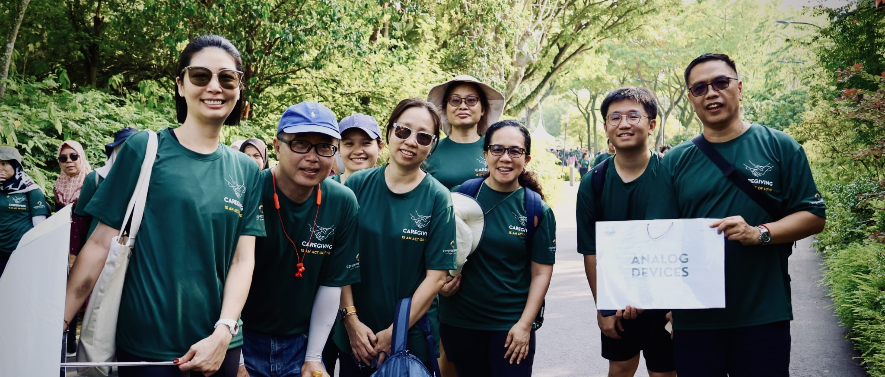

ADI Cares
On July 27, 2024, the vibrant setting of Gardens by the Bay witnessed a meaningful convergence of community spirit and commitment to mental wellness. Organized by Caregivers Alliance Limited, the event brought together over 600 participants for a mass walk designed to raise awareness and funds for caregivers and their patients. The morning’s activities, held at the picturesque Active Garden, highlighted the collective effort of both individuals and organizations in supporting mental health.
Our team, small in number but big in heart, gathered early to participate in this meaningful event. The day began with energetic warm-ups led by enthusiastic instructors, setting an upbeat tone for the walk ahead. As the sun shone brightly over the stunning landscape of Gardens by the Bay, our colleagues joined a diverse group of around 600 participants for a 45-minute walk. The scenic route through the lush greenery combined with the collective energy of the participants, created an uplifting atmosphere that was both invigorating and inspiring.
The purpose of the walk was twofold: to spotlight the importance of mental wellness and to raise crucial funds for those who provide essential care. Each step taken by our team not only contributed to these goals but also reflected our organization’s commitment to social responsibility. The sight of our colleagues walking side by side with others from various companies underscored the unity and shared purpose that such events foster.
An important aspect of our participation was the opportunity to contribute beyond just volunteering. For every hour our colleagues volunteered, our corporate charity foundation committed to making an equivalent monetary donation to Caregivers Alliance Limited. This matching donation system not only rewarded their dedication but also amplified the overall impact of the event, ensuring that every bit of effort translated into tangible support for caregivers.
One of the highlights of the day was the community spirit displayed throughout the event. After the walk, our team chose to extend their engagement by sharing a meal together at a nearby eatery. This time of camaraderie allowed for reflection on the event's significance and strengthened the bonds among colleagues who had worked together for a common cause.
As we look back on the event, it’s clear that our team’s involvement made a meaningful difference. The enthusiasm and dedication shown by our colleagues were integral to the event’s success. Their participation not only supported a worthy cause but also demonstrated our organization's values of empathy and community service.
We extend our deepest gratitude to those who volunteered their time and energy. Your efforts have not only contributed to a significant cause but have also set a shining example of how individual actions can lead to collective change. The impact of your participation will be felt by many, as the funds raised will support caregivers in their vital work.
Thank you once again to all our colleagues who made this event a success. Your commitment and spirit have not gone unnoticed, and we look forward to future opportunities where we can continue to make a difference together.

QWL committee member 2024